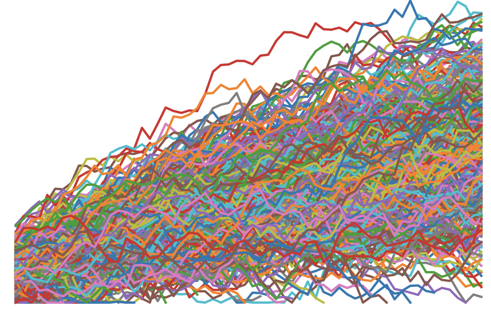

MixR

This option aims to extend skills to work with and analyse repeated measures data from typical experimental and applies studies in psychology.
Approach of the course
In common with all modules at Plymouth, we try to avoid the ‘bag of tricks’ approach to teaching research methods and try to integrate new skills into a broader approach to collecting and using data. Our workflow is inspired by Wickham’s model for data science: Wickham, 2017:

Wickham’s model of a data science workflow
In this option we do teach specific techniques, but the aim is always to help you integrate this new knowledge into your own research practice.
Access to R
Throughout the module we use R for data processing and analysis.
If you are taking this course at Plymouth University, the easiest way to run the code examples here is to the school’s RStudio Server.
- Login to your account on the server here
- To get an account on the server, or reset a password, contact the Psychology technical office
Installing at home
If you want to install R on your own machine, instructions are available here:
Be sure to install the recommended packages or the examples given here won’t work.
License
All content on this site distributed under a Creative Commons licence. CC-BY-SA 4.0.